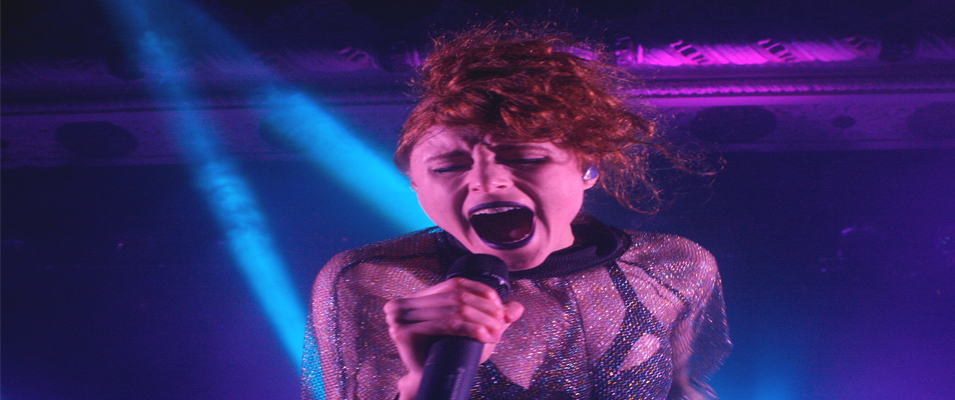
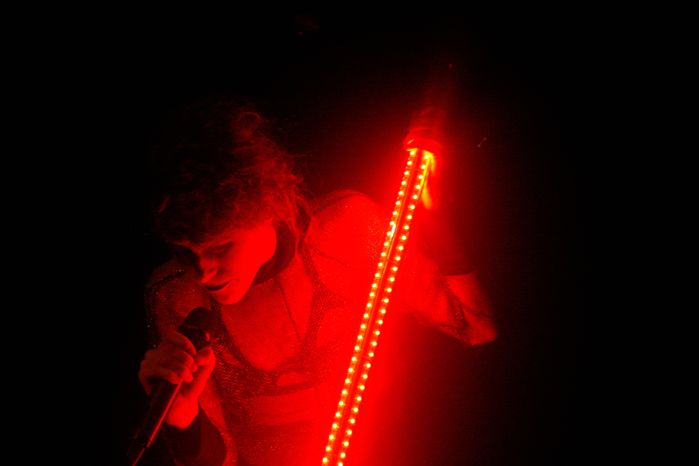
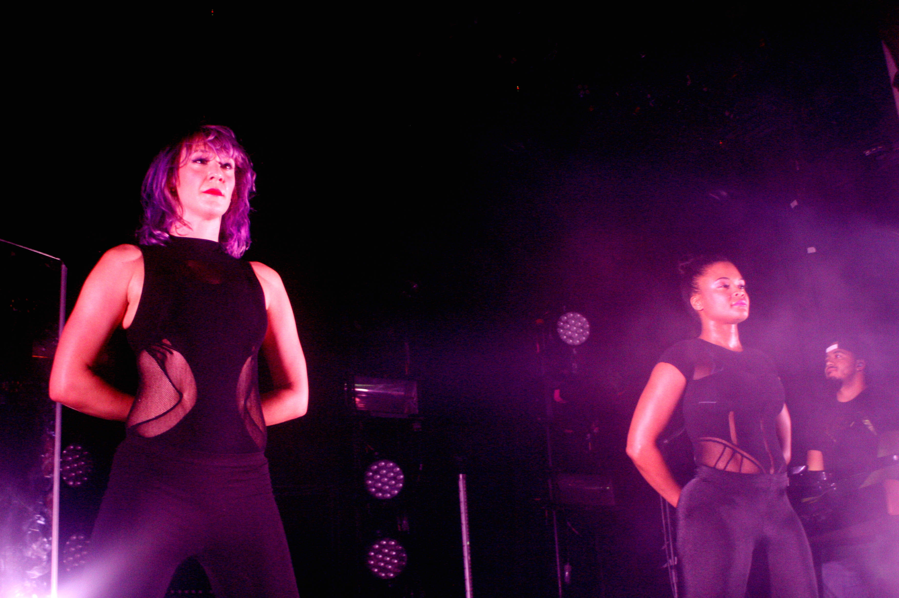

|  | |||
Kiesza: Metro Chicago One Monday at Metro in Chicago, fans came out to hear the sounds of Kiesza for her “Sound of a Woman” Tour. The vibe in the room was electric, between Kiesza’s stage energy and her two wing women dancers, the audience could have gone all night. She came back out ready to entertain. Her back up dancers did everything from twirling to break dancing; however, that was nothing in comparison to Kiesza doing the worm on the stage. The most visually stunning aspect of her show had to be what I would like to call her “disco stick,” a glowing microphone stand that changed from a sultry deep rouge, to green and turquoise throughout the evening. She performed “Losing My Mind,” which features Chicago’s own Mick Jenkins on the audio version. She slowed things down a bit to do her romantic rendition of Haddaway’s “What is Love?” as sat in the spotlight and played the piano beautifully, belting out “baby don’t hurt me, no more.” She followed that with another couple of slow tunes, “Cut Me Loose,” had a bit of a melancholy feeling, especially given her description of the song, about that moment when two lovers know it’s the beginning of the end, and the sexy “So Deep” and “Sound of a Woman” which her tour was named after.The highest moments of the night definitely had to be “Take You There,” her collaboration with dub club heavy hitters Skrillex and Diplo. The crowd was so live there was definite head banging going on. She saved her best for last, her claim to fame, “Hideaway,” dancing on the Metro stage just as she did in the music video walking the streets of Brooklyn, audience “ooing and ahhing” all the while with her.  
For more about Kiesza: Kiesza's Website |
|||